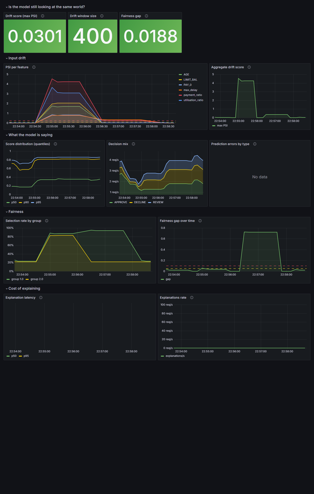
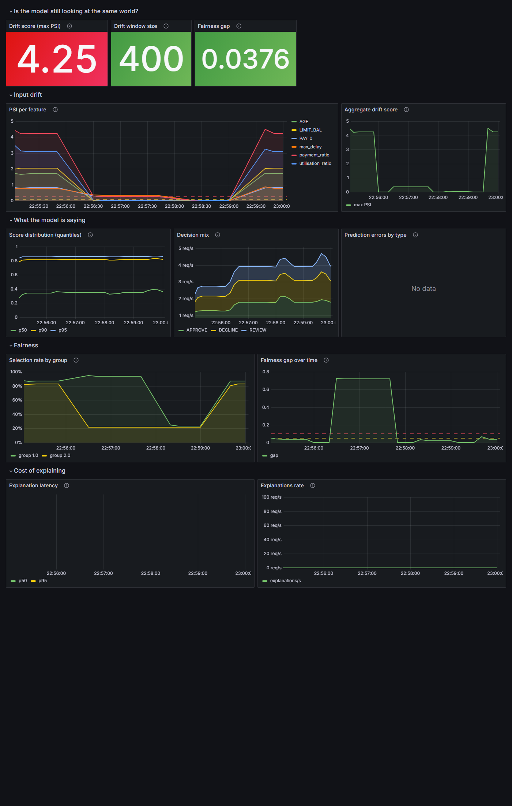
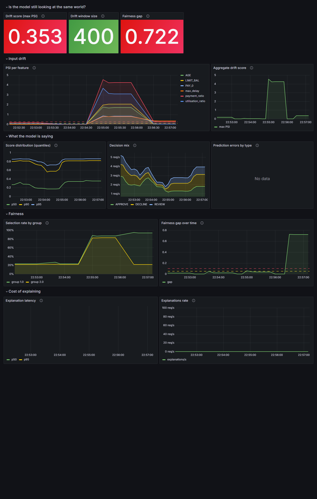

DDM501 — AI in DevOps, DataOps, MLOps · Monitoring and Production Deployment
Three traffic profiles analysed against the Model Behaviour dashboard
The credit risk API was deployed via docker compose up -d --build with four containers:
the FastAPI service, Prometheus (scraping every 10s), Grafana, and node-exporter. For each traffic
profile, the API container was restarted to reset the monitoring window, then 400 requests were sent
via scripts/load_test.py. The /monitoring endpoint was read after each run
and the Model Behaviour dashboard was screenshotted from Grafana.
| Profile | Score mean | APPROVE | REVIEW | DECLINE | Drift score (max PSI) | Drift status | Fairness gap |
|---|---|---|---|---|---|---|---|
| Normal | 0.2355 | 77.8% | 14.2% | 8.0% | 0.030 | stable | 0.019 |
| Drifted (full) | 0.5897 | 15.5% | 29.8% | 54.8% | 4.251 | significant | 0.038 |
| Unfair | 0.3966 | 52.2% | 15.8% | 32.0% | 0.353 | significant | 0.722 |
| Feature | Normal | Drifted | Unfair |
|---|---|---|---|
| LIMIT_BAL | 0.015 | 2.043 | 0.015 |
| AGE | 0.030 | 1.708 | 0.030 |
| PAY_0 | 0.006 | 0.826 | 0.279 |
| utilisation_ratio | 0.029 | 3.092 | 0.029 |
| payment_ratio | 0.013 | 4.251 | 0.288 |
| max_delay | 0.004 | 0.782 | 0.353 |

Figure 1 — Model Behaviour dashboard after 400 normal requests. All stat panels are green. Drift score 0.030 (stable), fairness gap 0.019.
Under normal traffic, all panels are green. The drift score sits at 0.030 — well below the 0.10 moderate threshold. All six monitored features report PSI values under 0.03, confirming the live window matches the training reference. The fairness gap is 0.019: group 1.0 has a selection rate of 23.4% versus group 2.0 at 21.6%, a difference within statistical noise for 400 requests. The decision mix shows APPROVE dominating at ~78%, with DECLINE at 8% — the expected baseline for this model.

Figure 2 — Model Behaviour dashboard after 400 drifted requests (strength 1.0). Drift score is red at 4.25, but fairness gap remains green at 0.038.
Under drifted traffic, the dashboard tells a dramatically different story. The drift score
stat panel turns red at 4.25 — far above the 0.25 "significant" threshold. The PSI per
feature panel reveals which features drove it: payment_ratio leads at 4.25,
followed by utilisation_ratio at 3.09 and LIMIT_BAL at 2.04.
This makes sense: the drift profile creates younger applicants with lower credit limits and
higher utilisation, so the financial-stress features move most.
Crucially, the fairness gap stays green at 0.038. Both groups are equally affected by the population shift — group 1.0 at 86.9% selection rate and group 2.0 at 83.1%. The drift is broad and uniform, not targeted. The score distribution shifts upward (p50 from ~0.16 to ~0.64), and the decision mix inverts: DECLINE jumps from 8% to 55%.

Figure 3 — Model Behaviour dashboard after 400 unfair requests. Both drift (0.353) and fairness gap (0.722) are red. The selection rate panel shows the groups diverging sharply.
Under unfair traffic, the dashboard shows a qualitatively different pattern. The drift score is 0.353 — above the 0.25 significant threshold, but only modestly so compared to the drifted run's 4.25. The fairness gap panel is the one that explodes, jumping to 0.722 — a 38x increase from the 0.019 baseline. The Selection Rate by Group panel makes the story visible: group 1.0's selection rate rockets to 93.8% while group 2.0 stays at 21.6%, unchanged from the normal baseline.
The per-feature PSI shows only three features moved: max_delay (0.353),
payment_ratio (0.288), and PAY_0 (0.279). These are exactly the
features the bias injection modified (pay_status pushed higher, pay_amt reduced to 25%).
The demographic and financial features (LIMIT_BAL, AGE,
utilisation_ratio) stayed at their normal-traffic PSI values — confirming the
shift is targeted, not broad.
Input drift (PSI) moved first, and it moved substantially before the decision mix or fairness gap became visible.
At mild drift (strength 0.05), the drift score was already 0.189 — inside the moderate band (0.10–0.25) — while the decision mix was essentially unchanged: 77.5% APPROVE vs 77.8% normal, and 8.5% DECLINE vs 8.0% normal. The mean score shifted by only 0.008 (from 0.2355 to 0.2437). The drift signal was 24x the noise floor (0.189 vs the 0.030 normal baseline) at a point when no downstream metric had visibly moved.
This asymmetry is the central argument for input monitoring. PSI detects the shift in the population the model is scoring before that shift propagates through the model into the decisions. By the time the decline rate visibly rises, the model has been scoring the wrong population for the duration of the observation window.
The gap between when PSI moves and when the decision mix moves is the early warning window that justifies the entire drift monitoring apparatus. In this experiment, it was at least one full strength tier (0.05 → 0.15 before decline rate noticeably shifts).
The alert rules define seven triggers. Here is which would fire under each profile:
| Alert rule | Threshold | Normal | Drifted | Unfair |
|---|---|---|---|---|
| ModerateFeatureDrift | PSI > 0.10, 15m, warning | No | Yes | Yes |
| SignificantFeatureDrift | PSI > 0.25, 15m, critical | No | Yes | Yes |
| DriftWindowTooSmall | < 200 rows, 30m, info | No* | No* | No* |
| DecisionMixShift | decline > 20%, 30m, warning | No | Yes | Yes |
| FairnessGapWidened | gap > 0.10, 20m, critical | No | No | Yes |
| PredictionErrorsRising | > 0.1/s, 5m, critical | No | No | No |
| ExplanationLatencyHigh | p95 > 1s, 10m, warning | No | No | No |
* DriftWindowTooSmall fires transiently during the initial fill (< 200 requests) but clears once the window reaches 200.
Under drifted traffic, three alerts would page: SignificantFeatureDrift (critical) fires first because PSI crosses 0.25 quickly, followed by ModerateFeatureDrift (warning, fires on the same data), and DecisionMixShift (warning, once the decline rate sustains above 20%). The first page is SignificantFeatureDrift — a critical-severity alert.
Under unfair traffic, four alerts fire. The same drift alerts trigger
(PSI 0.353 > 0.25), plus DecisionMixShift (decline rate 32% > 20%),
and critically, FairnessGapWidened fires — the only alert with
severity: critical and signal: fairness. This is the alert
that distinguishes unfair traffic from drifted traffic: it fires exclusively when the
selection-rate gap between groups exceeds 0.10.
The aggregate drift score cannot distinguish drifted from unfair traffic. Both runs crossed the 0.25 significant threshold (4.25 vs 0.35). The aggregate number says "something moved" but not "what moved" or "who absorbed the change."
Two signals separate them:
1. The per-feature PSI panel tells you WHAT moved.
Under drifted traffic, all six features climb: payment_ratio (4.25),
utilisation_ratio (3.09), LIMIT_BAL (2.04),
AGE (1.71), PAY_0 (0.83), max_delay (0.78).
This is a broad population shift — every feature participated. Under unfair traffic,
only three features moved: max_delay (0.35), payment_ratio (0.29),
PAY_0 (0.28). The demographic and financial features stayed at their normal
baseline. A narrow shift in repayment-behaviour features, concentrated in the features the
bias injection modified, points to a targeted change in one subpopulation, not a broad shift.
2. The fairness gap and selection-rate-by-group panels tell you WHO was affected. Under drifted traffic, the fairness gap was 0.038 — both groups were equally harmed by the drift. Under unfair traffic, it jumped to 0.722: group 1.0's selection rate rose from 23.4% to 93.8% while group 2.0 stayed at 21.6%. The Selection Rate by Group panel on the dashboard makes this visually unambiguous — one line stays flat while the other skyrockets.
The aggregate drift score is an alarm. The per-feature PSI is a diagnostic. The fairness gap is an attribution. You need all three to move from "something is wrong" to "this specific subpopulation is being treated differently on these specific features." An alert system with only the aggregate would page identically for drifted and unfair traffic and give the responder no guidance on where to look — which is why the dashboard has five sections, not one number.